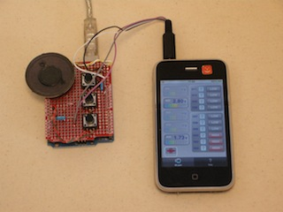

Any kind of capacitores can be used for C1 and C2. Earphone jack left channel must be connected to the Arduino.OTOduino app only uses headset left channels to transmit data to Arduino. Right channel is mute.
"OTO" means "sound" in Japanese. "OTOduino" is a visualized sound modem terminal application for iPhone. You can monitor and control Arduino(TM) digital and analog ports status by connecting your Arduino to iPhone earphone jack as following: 
Both "OTOduino" (repository https://github.com/reinforce-lab/OTOduino) project and a software modem project "OTO-plug" (repository https://github.com/reinforce-lab/OTO-plug) which "OTOduino" uses are open-source projects released under MIT license. These projects have been developed by an freelance engineer Akihiro UEHARA, REINFORCE Lab (http://www.reinforce-lab.com/, web site is written in Japanese) who also provides iPhone software design services.
You need an interface circuit to use OTOduino.
However the interface circuit for Arduino is going to be released at the end of March,
it is very simple that You can make your own one.
Its circuit diagram is as following:
Any kind of capacitores can be used for C1 and C2.
Earphone jack left channel must be connected to the Arduino.OTOduino app only uses headset left channels to transmit data to Arduino. Right channel is mute.
First SoftwareModem library should be added to your local disk. Make a "SoftwareModem" directory in your Arduino libraries directory (~/Document/Arduino/libraries/ on Mac OS), and then download source codes SoftwareModem.cpp and SoftwareModem.h from the repository https://github.com/reinforce-lab/OTOduino/tree/master/OTO-plug/src/arduino/libraries/SoftwareModem/.
Second download a sketch and upload it. Make a "OTOduinoSImpleClient" directory and download source codes OTOduinoSimpleClient.pde and OTOduinoTypes.h from the repository https://github.com/reinforce-lab/OTOduino/tree/master/src/arduino/OTOduinoSimpleClient. Now you can open the OTOduinoSimpleClient sketch and verify/upload it to your Arduino.
When you plug an audio jack to iPhone, OTOduino connection icon (at the left lower of a screen) changes "Disconnected" to "Connected". If it does not changes to "Connected", check the warning message shown the right side of the icon. In the most cases, you should set the output volume at the maximum.
You can monitor voltage of Arduino analog ports. You can toggle enable/disable state of the analog panels (placed at the left of the screen) by touching them. To monitor digital ports, first touch a small icon of digital panels to change it to "in" icon. Then right button shows the current digital port value (high or low). To output signal from a digital port, touch a small icon and change it to "out" icon. Then you can toggle high/low status of the digital port by right button touch.